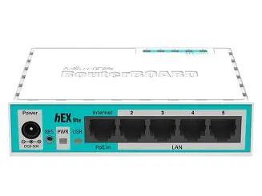

Configuring a Basic DHCP Server on MikroTik RouterOS

Introduction
You have a spare MikroTik around and wonder what you can do with it? In this guide, you will learn one of the most common uses of a MikroTik RouterBOARD for your home network. This guide covers how to get an internet connection to your RouterBOARD, set up IP pools, configure the gateway, and run a DHCP server using WinBox.
Step 1: Reset the Device to Zero Configuration (No Default Config)

Starting from a completely blank setup ensures existing default rules or configurations do not conflict with your setup.
- Connect your PC: Connect your PC to any port on the MikroTik (e.g.,
ether2) using an Ethernet cable. - Open WinBox: Go to the Neighbors tab, click on your
router's MAC address, and click Connect (default username is
adminwith no password). - Reset Configuration: In the left menu, navigate to System > Reset Configuration.
- Disable Defaults: Check the box for No Default Configuration.
- Confirm: Click Reset Configuration, then click Yes to confirm.
- Reconnect: The router will reboot and wipe all settings. Once it turns back on, reconnect via WinBox using the MAC Address from the Neighbors list.
Step 2: Get Internet to the RouterBOARD (Ethernet ISP Setup)

When your ISP gives you a direct Ethernet cable along with static IP details (IP Address, Subnet
Mask, Gateway, and DNS), configure ether1 manually as follows:
1. Connect the Ethernet ISP Cable
Plug the main Ethernet line from your ISP into ether1 on the MikroTik.
2. Assign the Static WAN IP Address
- In WinBox, click IP > Addresses.
- Click the blue + (Add) button.
- In Address, enter the static IP and CIDR subnet mask provided by your ISP
(e.g.,
192.168.1.100/24or203.0.113.10/24). - Set Interface to
ether1. - Click Apply, then OK.
3. Add the Default Gateway Route
- Go to IP > Routes.
- Click the blue + (Add) button under the Routes tab.
- Leave Dst. Address as
0.0.0.0/0. - In the Gateway field, enter the Gateway IP address given by your ISP (e.g.,
192.168.1.1or203.0.113.1). - Click Apply, then OK. Verify that the status shows reachable.
4. Configure DNS Settings
- Go to IP > DNS.
- In the Servers box, enter your ISP's DNS IP addresses (or public DNS like
1.1.1.1and8.8.8.8). - Check the box for Allow Remote Requests (this lets local LAN clients use the MikroTik as their DNS resolver).
- Click Apply, then OK.
5. Configure Firewall NAT (Masquerade)
- Go to IP > Firewall and select the NAT tab.
- Click the blue + (Add) button.
- Under the General tab: set Chain to
srcnatand Out. Interface toether1. - Under the Action tab: set Action to
masquerade. - Click Apply, then OK.
Step 3: Configure LAN IP Address and Gateway

Set a static IP address on your local interface (ether2 or a bridge) to act as the
default gateway for your LAN devices.
- Go to IP > Addresses.
- Click the blue + (Add) button.
- Enter Address:
192.168.88.1/24. - Select Interface:
ether2(or your local LAN interface / bridge). - Click Apply (the Network field will auto-fill to
192.168.88.0), then click OK.
Step 4: Set Up the DHCP Server and IP Pool

Use the built-in wizard to automatically generate the IP pool, gateway parameters, and DHCP server instance.
- Go to IP > DHCP Server.
- On the DHCP tab, click the DHCP Setup button.
- DHCP Server Interface: Select
ether2(or your LAN interface/bridge). Click Next. - DHCP Address Space: Confirm
192.168.88.0/24. Click Next. - Gateway for DHCP Network: Confirm
192.168.88.1. Click Next. - Addresses to Give Out (IP Pool): Set the range of IP addresses to assign
dynamically (e.g.,
192.168.88.10-192.168.88.254). Click Next. - DNS Servers: Enter your preferred DNS servers (e.g.,
1.1.1.1and8.8.8.8, or192.168.88.1). Click Next. - Lease Time: Enter how long devices keep an assigned IP (e.g.,
1dfor 1 day). Click Next. - Click OK on the completion prompt.
Step 5: Test the Connection

- Request a fresh IP: Unplug and reconnect your computer's Ethernet cable (or disable and re-enable the network adapter) to request a fresh IP from the MikroTik.
- Check your IP: Check your computer's network details—it should now have an
IP address in the
192.168.88.xrange. - View the lease: In WinBox, go to IP > DHCP Server > Leases tab to view your connected device.
- Confirm internet access: Open a terminal or browser on your PC and
ping 8.8.8.8or browse a website to confirm active internet access.